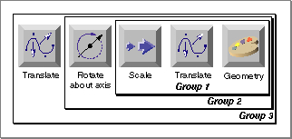
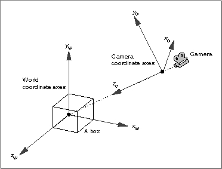
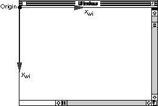
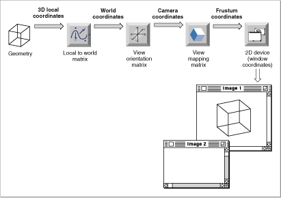
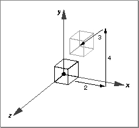
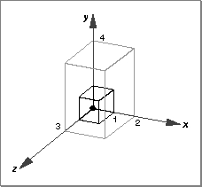
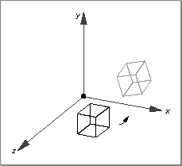
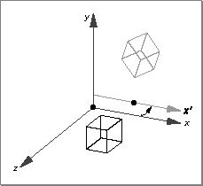
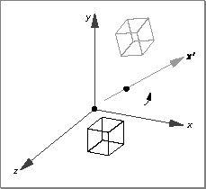

About Transform Objects
A transform object (or, more briefly, a transform) is an object that you can use to modify or transform the appearance or behavior of drawable QuickDraw 3D objects. You use transforms to reposition and reorient geometric shapes in space. Transforms are useful because they do not alter the geometric representation of objects (that is, the vertices or other values that define a geometric object); rather, they are applied as matrices at rendering time, temporarily "moving" an object in space. Thus you can reference a single object multiple times with different transforms and can place an object in many different locations within a model.A transform is of type
TQ3TransformObject, which is a type of shape object. QuickDraw 3D defines these basic types of transforms:No matter how you specify a transform, QuickDraw 3D maintains its data in that form until you begin to render an image, at which time it converts the data to a temporary matrix that is applied to the objects it governs. Because transforms are a type of shape object, you apply a transform by drawing it into a view or by putting it into a group. If you draw a transform in a view, you can use either retained or immediate transforms.
- matrix transforms
- translate transforms
- scale transforms
- rotate transforms
- rotate-about-point transforms
- rotate-about-axis transforms
- quaternion transforms
When you apply several transforms to a vector, the transform matrices are premultiplied to the vector. For example, in the multiplication v[A][B]...[M] of the vector v by the matrices A, B,..., M, matrix A is first applied to the vector, then B, and so forth. Accordingly, you should specify transforms to be concatenated in the reverse order that you want to apply them. This scheme is consistent with the application of matrices in a hierarchy, in which matrices at the top of a hierarchy are applied last.
For example, consider the very simple model illustrated in Figure 7-1, which consists of three separate groups. A geometric object is first grouped with a scale and a translate transform (the translate transform was added to the group before the scale transform was added); the resulting group is then grouped with a rotate-about-axis transform, and that group is finally grouped with a second translate transform.
Figure 7-1 A simple model illustrating the order in which transforms are applied

When this model is rendered, the transforms are applied to the geometric object in this order: scale, translate (group 1), rotate-about-axis (group 2), translate (group 3). Your application should add transforms to a group in the reverse order they are to be rendered. That is, in the example, you would first add the translate transform to Group 1 and then add the scale transform.
- Note
- For information about creating groups of QuickDraw 3D objects, see the chapter "Group Objects."

Spaces
A coordinate system (or space) is any system of assigning planar or spatial positions to objects. In general, QuickDraw 3D operates with rectilinear or Cartesian coordinate systems, in which the position of a point in a plane or
in space is determined by projecting the point onto the coordinate axes, which are mutually perpendicular lines that intersect at a point called the origin. By convention, the origin is the planar point (0, 0) or the spatial point (0, 0, 0). Figure 7-2 shows a Cartesian coordinate system that is right-handed (that is, if the thumb of the right hand points in the direction of the positive x axis and the index finger points in the direction of the positive y axis, then the middle finger points in the direction of the positive z axis).Figure 7-2 A right-handed Cartesian coordinate system
QuickDraw 3D, like virtually all other 3D graphics systems, defines several distinct coordinate systems and maintains transforms that it uses to convert one coordinate system into another.
- Note
- You can, for certain purposes, specify positions using other types of coordinate systems, such as the polar coordinate system (a system of assigning planar positions to objects in terms of their distances r from the origin along a ray that forms a given angle q with a fixed coordinate line) or the spherical coordinate system (a system of assigning spatial positions to objects in terms of their distances r from the origin along a ray that forms a given angle q with a fixed coordinate line and another angle f with another fixed coordinate line). QuickDraw 3D provides routines you can use to convert among these three types of coordinate systems. See the chapter "QuickDraw 3D Mathematical Utilities" for details. Unless noted differently, this book always uses Cartesian coordinate systems.
Because it's often useful to define an object once and then to create multiple copies of that object for placement at different positions and orientations, QuickDraw 3D supports a local coordinate system for each object you define. An object's local coordinate system is simply the coordinate system in which it is specified (that is, that determines the values you specify in the relevant data structure). Any given object can be defined using any of infinitely many local coordinate systems. Usually, you'll pick a local coordinate system whose origin coincides with some part of the object. For instance, it's quite natural to define a box using a local coordinate system whose origin is at the box's origin, and whose axes coincide with the box's axes.
The world coordinate system (or world space) defines the locations of all geometric objects as they exist at rendering or picking time, with all applicable transforms acting on them. It's important to note that world space is relevant only within a submitting loop, because the transforms that relocate or reorient an object must be applied to the object to determine its position and orientation in world coordinates.
- Note
- A local coordinate system is sometimes called an
object coordinate system or a modeling coordinate system, and the space it defines is the object space
or modeling space.You can create copies of an object and place them at different locations by applying different transforms to each copy. A transform changes an object's position or orientation in world coordinates, but not its local coordinates. In other words, if you use the function
- Note
- The world coordinate system is sometimes called the global coordinate system or the application coordinate system, and the space it defines is the global space or application space.
Q3Box_GetOriginwith two copies of a single box, the function always returns the same origin for each box, whether or not transforms have been applied to one or both of the copies.The relationship between an object's local coordinate system and the world coordinate system is specified by that object's local-to-world transform. For objects that have no transforms applied to them at rendering time, the local-to-
world transform can be represented by the identity matrix, in which case the local coordinate system of that object and the world coordinate system coincide. If one or more transforms is applied to the object at rendering time, the world space location of the object is determined by taking its local space position and applying the transforms to it.A world coordinate system defines the relative positions and sizes of geometric objects. When an object is rendered in a view, the view's camera specifies yet another coordinate system, the camera coordinate system (or camera space). A camera coordinate system is defined by the camera placement structure associated with the camera, which is defined like this:
typedef struct TQ3CameraPlacement { TQ3Point3D cameraLocation; TQ3Point3D pointOfInterest; TQ3Vector3D upVector; } TQ3CameraPlacement;The
- Note
- See the chapter "Camera Objects" for complete information about the camera placement structure.
cameraLocationfield specifies the origin of the camera coordinate system. ThepointOfInterestfield specifies the z axis of the camera coordinate system, and theupVectorfield specifies the y axis of the camera coordinate system. The x axis of the camera coordinate system is determined by the left-hand rule. Figure 7-3 shows a camera coordinate system and its relation
to the world coordinate system. In this figure, the camera is set to take
an isometric view of the box whose origin is at the origin of the world
coordinate system.Figure 7-3 A camera coordinate system

As you know, a camera specifies a method of projecting a three-dimensional model onto a two-dimensional plane, called the view plane. The camera, the view plane, and the hither and yon clipping planes together define the part of the model that is projected onto that view plane. As you can see in Figure 9-7 on page 9-13, these objects define a rectangular frustum known as the viewing box. When perspective camera is used, the camera, the view plane, and the hither and yon clipping planes define a pyramidal frustum known as the viewing frustum (see Figure 9-5 on page 9-10). Because a camera and its camera coordinate system determine a unique view frustum, camera space is also called frustum space.The final step in creating an image of a model is to map the two-dimensional image projected onto the view plane into the draw context associated with a view. In general, the draw context specifies a window on a screen or other display device that is to contain all or part of the view plane image. Accordingly, QuickDraw 3D maintains, for each draw context, a window coordinate system (or window space) that defines the position of objects in the draw context. Figure 7-4 shows a window coordinate system.
Figure 7-4 A window coordinate system

In addition to the local-to-world transform (which defines the relationship between an object's local coordinate system and the world coordinate system), QuickDraw 3D also maintains a world-to-frustum transform (which defines the relationship between the world coordinate system and the frustum coordinate system) and a frustum-to-window transform (which defines the relationship between a frustum coordinate system and a window coordinate system). See Figure 7-5. You can, if necessary, get a matrix representation of these three transforms. See the chapter "View Objects" for details.
- Note
- A window coordinate system is sometimes called a
screen coordinate system or a draw context coordinate system, and the space it defines is the screen space or draw context space.The world-to-frustum transform is actually the product of two transforms specified by matrices, the view orientation matrix and the view mapping matrix. The view orientation matrix rotates and translates the view's camera so that it is pointing down the negative z axis. The view mapping matrix transforms the viewing frustum into a standard rectangular solid. This standard rectangular solid is a box containing x values from -1 to 1, y values from -1 to 1, and z values from 0 to -1. The far clipping plane is the plane defined by the equation z = - 1, and the near clipping plane is the plane defined by the equation z = 0.
With a perspective camera, the view mapping matrix performs most of the work of projection. The objects transformed by the world-to-frustum transform are still 3D, but it's easy to get the 2D projection onto the view plane by simply dropping the z coordinate of each rendered point.
Figure 7-5 View state transformations

Types of Transforms
QuickDraw 3D supports a number of different ways of transforming geometric objects. Equivalently, these transforms are ways of transforming coordinate systems containing geometric objects.Matrix Transforms
A matrix transform is any transform specified by an affine, invertible 4-by-4 matrix. QuickDraw 3D does not check that the matrix you specify is affine
or invertible, so it is your responsibility to ensure that the matrix has
these qualities.A matrix transform is the most general type of transform and can be used to represent any of the other kinds of transforms. If, however, you just want to apply a translation to an object, it's better to use a translate transform instead of a matrix transform. By using the more specific type of transform object, you allow renderers and shaders to apply optimizations that might not apply to a more general transform.
Translate Transforms
A translate transform translates an object along the x, y, and z axes by specified values. You specify the desired translation values using a vector. For example, to translate an object by 2 units along the positive x axis, by 4 units along the positive y axis, and by 3 units along the positive z axis, you could define a vector like this:TQ3Vector3D myVector; TQ3TransformObject myTransform; Q3Vector3D_Set(&myVector, 2.0, 4.0, 3.0); myTransform = Q3TranslateTransform_New(&myVector);Figure 7-6 shows a unit cube before and after a translate transform is applied.Figure 7-6 A translate transform

Scale Transforms
A scale transform scales an object along the x, y, and z axes by specified values. As with a translate transform, you specify the desired transform using a vector. For example, to scale an object by a factor of 2 along the positive x axis, by a factor of 4 along the positive y axis, and by a factor of 3 along the positive z axis, you could define a vector like this:TQ3Vector3D myVector; Q3Vector3D_Set(&myVector, 2.0, 4.0, 3.0);Figure 7-7 shows a unit cube before and after applying a scale transform.
Rotate Transforms
A rotate transform rotates an object about the x, y, or z axis by a specified number of radians at the origin. To specify a rotate transform, you fill in the fields of a rotate transform data structure, which specifies the axis of rotation and the number of radians to rotate. You can use QuickDraw 3D macros to convert degrees to radians, if you prefer to work with degrees. (See the chapter "QuickDraw 3D Mathematical Utilities" for details.) Figure 7-8 shows a unit cube before and after applying a rotate transform.
Rotate-About-Point Transforms
A rotate-about-point transform rotates an object about the x, y, or z axis by
a specified number of radians at an arbitrary point in space. To specify a rotate-about-point transform, you fill in the fields of a rotate-about-point transform data structure, which specifies the axis of rotation, the point of rotation, and the number of radians to rotate. Figure 7-9 shows a unit cube before and after applying a rotate-about-point transform.Figure 7-9 A rotate-about-point transform

Rotate-About-Axis Transforms
A rotate-about-axis transform rotates an object about an arbitrary axis in space by a specified number of radians at an arbitrary point in space. To specify a rotate-about-axis transform, you fill in the fields of a rotate-about-axis transform data structure, which specifies the axis of rotation, the point of rotation, and the number of radians to rotate. Figure 7-10 shows a unit cube before and after applying a rotate-about-axis transform.Figure 7-10 A rotate-about-axis transform

Quaternion Transforms
A quaternion transform rotates and twists an object according to the mathematical properties of quaternions.